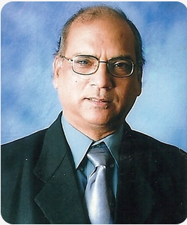
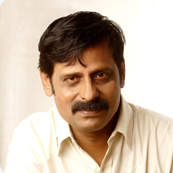
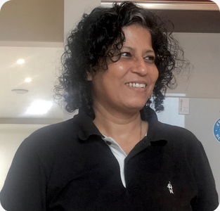
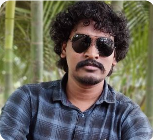

Kuldip Sinha
Director
Kuldip Sinha did his diploma in Cinema from FTII Pune after completing his graduation from University of Pune. Winner of eight national and Five International awards, he served ministry of 1&B as a Director General in its Films Division Wing. He was also CEO of Children's Film Society of India. As a Director he also served 10th and 11th MIFF and 15th Golden Elephant International Children's Film Festival, Hyderabad. As a prolific writer he has written two novels and five technical books on various aspects of film making Few of his notable films which won critical acclaim- Gandhi-An emerging reality (1998) Through a Lens Starkly (1997), No Room for Fear(1996), Toote Pankh(1995) Druzba(1992) Taranath Shenoy(1990),, Services of Trees(1989), Dry Land farming(1985). Presently he is member of Film Censor Board, Mumbai, Film & Television Institute of India, Pune and Satyajit Ray Film & Television institute - Kolkata.
MK Shankar
Director and Script writer
MK Shankar did Post graduation in Cinema and thereafter started working as freelance film maker. He has produced and directed more than seventy five Documentaries, three Hindi feature films and various corporate films and comercials (Pidilite, Thermax, Crompton, L&T to name a few). His award winning films include Solution (1986), Silent Revolution (1991) The Resurgence (2003) and The Messengers (2004). He is a visiting faculty at various film institutes in Mumbai and Maharashtra and also a selection committee member for MIFF (2010).
Shubra Dutta
Cinematography
Shubra Dutta is a highly accomplished and sought-after passionate professional cinematographer with over two decades of experience in the film industry. Her journey into the realm of cinematography began from SRFTI (Kolkata) under the guidance of Subrata Mitra, honing her technical skills and artistic sensibilities, developing a keen eye for framing. lighting, and visual storytelling. Over the years, her extensive portfolio showcases a diverse range of projects, including feature films, documentaries, television series, and commercials. Her ability is to adapt her cinematographic style to cater to the unique requirements of each project
Sreenivasa Murthy Ninasam
Actor and Director
G.S SreenivasaMurthy did his graduation in Science (2013). Thereafter did his diploma in acting from Ninasam, Heggodu in 2015. He did national level director workshop from Ranga shankara and also completed a film workshop from IFVT Pune. As a prolific actor and director, he is conducting dramas in association with Rangayana, Ranga shankara, Ninasam and various universities all over karnataka.Madhyama vyayoga(2016), Rajanarthaki (2017) (state award winner), Innondu Sabhaparva (Ranga shankara youth festival awardee - 2015), Kurukshetra (2022), Sampoorna ramayana (2023) are some of his famous works.
Shailendra Singh 'Shellee'
lyricist and writer
Shailendra Singh Sodhi commonly known as 'Shellee' is a poet, film lyricist and writer. He has worked as a lyricist and background music composer for various Hindi films including the critically acclaimed Dev D, Udta Punjab and other films like Luv Shuvte Chicken Khurana, Shahid, Jugni, Phillauri, Veer De Wedding, Manmarziayan, Jai Mummy Di, Jawani Jaaneman etc . . . .